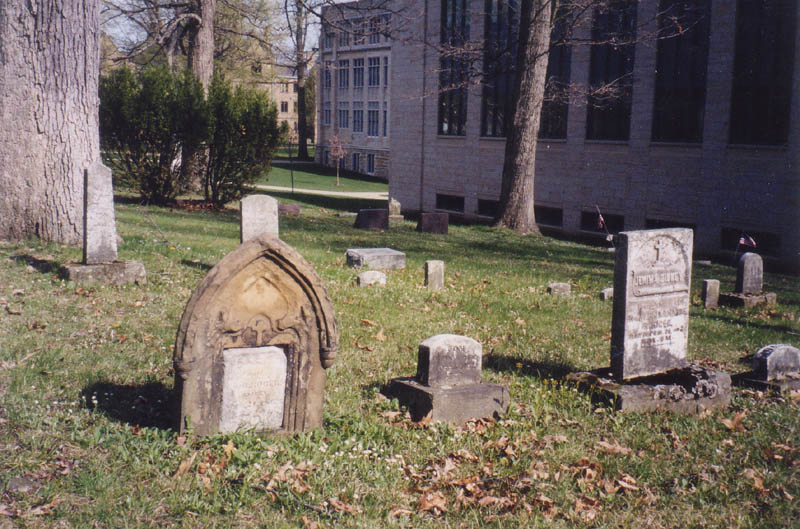
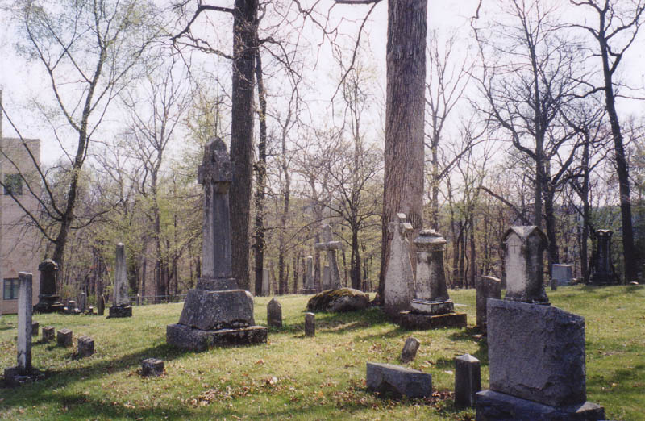
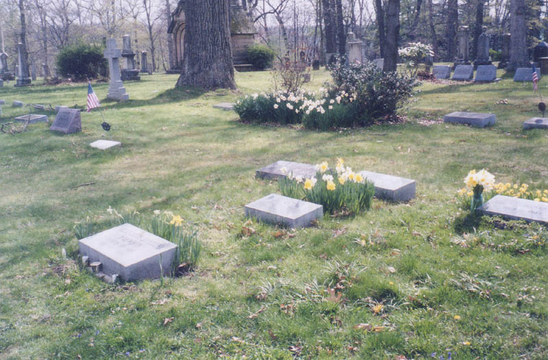
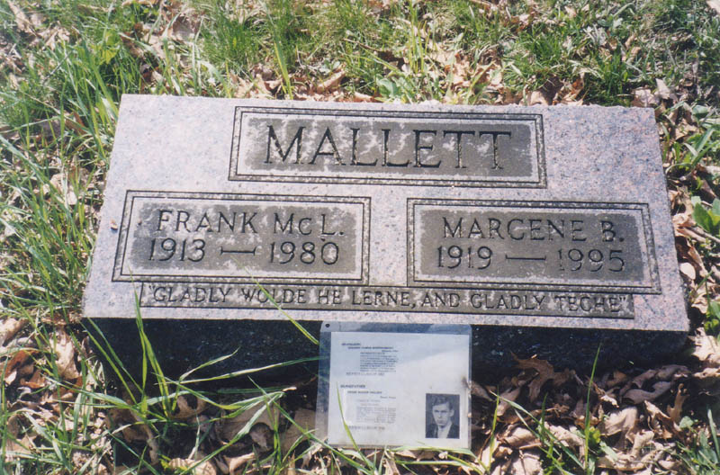
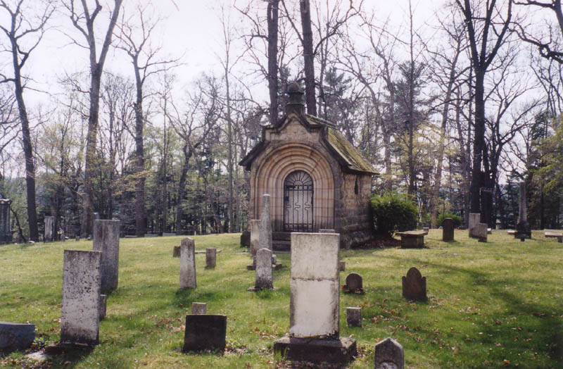
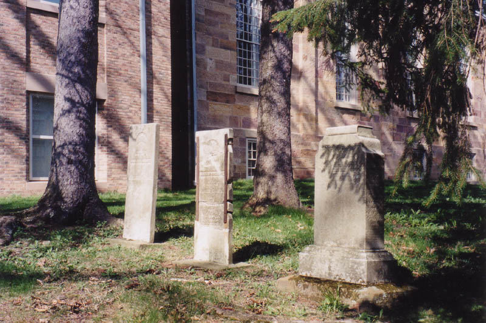
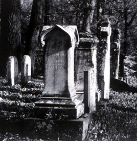

The Kenyon College Cemetery
Kenyon College itself has been around since roughly 1827; the record of burials on campus goes back at least that far, and perhaps further, since pioneer graves in the early 1800s weren't always grouped into cemeteries or marked properly. The grave of "an old man" is mentioned by a student who was shown it in 1828 by Bishop Philander Chase, Kenyon's founder and first president. It's likely that this grave was the first one among the hundred-odd graves in the official Kenyon College Cemetery, which is surrounded by a low wrought iron fence behind Rosse and Rutherford B. Hayes halls.

Philander Chase reported on the next four interments in this spot before his successor, Bishop Charles Pettit McIlvaine, turned the job over to the administration of the Episcopal parish. Since Gambier as a village still lacked a government of any kind, the local church was probably the only organization with members who weren't necessarily affiliated with the college.

The parish vestry set up a committee to charge burial fees and build a fence around the graveyard. For years they attempted to enforce the rules by charging anyone who didn't fill or clean up a gravesite a fine--one dollar for an adult, fifty cents for a child under ten. A number of students were buried here in the days before embalming made it feasable to have their bodies shipped back home. Many of the graves you see there today belong to young adults between eighteen and twenty-five years of age.

An expansion in 1854 brought the cemetery's size up to its currents size--as large as property constrants would allow. In 1866 Oak Grove Cemetery was begun by the village, leaving the original exclusively to the college. A new policy allowed only faculty members, officers of the college, their families, and Kenyon students to be offered the option of purchasing a plot. This restriction was modified in 1930 by college president William G. Caples, who expanded the policy to include "persons who have worked for or served Kenyon College or the Episcopal Church, or who are associated with the College, and their immediate families."

Aside from the occasional college-age Kenyon student, the cemetery is crowded with alumni. As you can see above, Frank McLean Mallett (1913-1980) was a student in the 20s. Somebody left a laminated copy of his page from the annual, showing him as a graduating senior.

The cemetery's only mausoleum belongs to the family of John N. Lewis, an engineer from Mount Vernon who received an honorary degree from Kenyon in 1876. Legend has it that bootleggers set up a distillery in the Lewis crypt during Prohibition.
An interesting exception to the occupancy rules was made in 1865, when Kwaku Lebiete, a child from Africa's Gold Coast who was adopted by American missionaries, died in Gambier. He hadn't been a student, but because of the unique circumstances of his life the college allowed him to be laid to rest under his Christian name: Samuel deWette.

A new music building, erected in 1998, required the relocation of a handful of graves to the other side of the cemetery. Among them was Colonel Lorin Andrews, Kenyon's sixth president. He led soldiers to battle in the early days of the Civil War, including many Kenyon students. He served under General McClellan in the West Virginia Campaign of 1861, during which he contracted typhoid fever and returned home to Gambier, where he died on September 18. Because he volunteered his services to Governor Dennison even before the April 1861 attack on Fort Sumter, he is known as Ohio's "First to Fight."
And then there's John Crowe Ransom, perhaps the most famous inhabitant of the College Cemetery. As a professor of the humanities, he founded the prestigious Kenyon Review and mentored a number of well-known poets, including Randall Jarrell, Robie Macauley, and Robert Lowell. His 1941 book The New Criticism is a seminal text still used in poetry classes today.

The cemetery is located at the south end of campus, just around the corner from Old Kenyon. Unlike much of the rest of the college, there aren't many stories of it being haunted. Click here to read about the less inactive dead people at Kenyon.
Find-a-Grave: Kenyon College Cemetery
Kenyon College Alumni Bulletin: "A Permanent Place on Campus"
Back
forgottenohio@yahoo.com
*Special thanks to Katydid for her photographs of the Kenyon College Cemetery.
Sources
Oden, Teresa J. "A Permanent Place on Campus: A History of the Kenyon College Cemetery." Kenyon College Alumni Bulletin, Fall/Winter 1998.{kind=link}
{kind=link}
{kind=link}
{kind=link}
{kind=link}
{kind=link}
{kind=link}